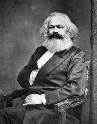

Marxismo é o conjunto de ideias filosóficas, econômicas, políticas e sociais elaborado a partir do escritos dos alemães Karl Marx (1818-1883) e Friedrich Engels (1820-1895).
Esta corrente de pensamento influenciou intelectuais de todas as áreas do saber ao longo dos século XIX e XX.
Origem do Marxismo
 Karl Marx: filósofo, economista, historiador, sociólogo, teórico político, jornalista, e revolucionário socialista alemão.Marx e Engels perceberam que o trabalho é o conceito chave da sociedade. Desta forma, toda a história da humanidade passaria pela tensão entre os donos dos meios de produção e quem apenas poderia realizar a tarefa.
Assim, para a teoria marxista a luta de classes seria “o motor da história”. Já a produção dos bens materiais seria o fator condicionante da vida social, intelectual e política.
Marx e Engels refletiram sobre as relações humanas e as instituições que regulavam as sociedades, como a propriedade privada, a família, o governo, a igreja, etc. Daí surgem os princípios que fundamentaram o marxismo, também conhecido como “socialismo científico”.
Por outro lado, o “socialismo utópico” já teorizava sobre os meios capazes de solucionar a diferença entre os membros do proletariado e da classe burguesa dominante.
Suas ideais inspiraram várias correntes de pensamento que desejavam mudar as estruturas capitalistas como o anarquismo, o socialismo e o comunismo, entre outros.
Portanto, para os marxistas, é necessário atrelar o pensamento à prática revolucionária, unindo o conceito à práxis para transformar o mundo.
Contudo, aqueles pensadores superestimaram a previsibilidade das sociedades humanas. Afinal, muitos dos países que se autoproclamavam seguidores das ideias marxistas não seguiram à risca os seus preceitos.
Principais Correntes Marxistas
As principais correntes do marxismo foram a social democracia, presente nos países ocidentais até os dias atuais, e o bolchevismo, extinto com a queda da URSS.
Ademais, a obra basilar do marxismo é “O Capital”, publicado em 1867. Como Marx falece em 1883, os volumes de 1885 e 1894, foram editadas por Engels, a partir dos manuscritos de Marx
Influência do Marxismo
O marxismo inspirou diversas revoluções como a bolchevique de Vladimir Lenin e Leon Trotsky, na Rússia em 1917
Após a Segunda Guerra Mundial, algumas dessas ideias foram adotadas na formação da República Popular da China, Vietnã, Alemanha Oriental, Polônia, Hungria, Bulgária, Iugoslávia, Checoslováquia, Coreia do Norte e Cuba.
Teoria Marxista
Desenvolvida em quatro níveis fundamentais, a teoria marxista se agrupa nos níveis filosófico, econômico, político e sociológico, segundo a ideia de “transformação permanente”.
Fica explicito, nessa abordagem, que o ser humano e a sociedade só podem ser compreendidos através das forças que produzem e reproduzem as condições materiais básicas para a sobrevivência.
Nessa perspectiva, torna-se fundamental a análise das condições materiais da existência humana em sociedade.
Por outro lado, o marxismo foi gestado a partir de três tradições intelectuais desenvolvidas na Europa do século XIX a saber:
- O idealismo alemão de Hegel;
- A economia-política de Adam Smith;
- A teoria política do socialismo utópico, de autores franceses.
A partir destas concepções foi possível elaborar um estudo da humanidade através do materialismo histórico.
Conceito de História
Para Marx, a história seria um processo de criação, satisfação e recriação contínuas das necessidades humanas. Estas não podem ser compreendidas fora do contexto histórico e seu determinismo material historicamente localizado.
O conhecimento liberta o homem por meio da ação deste sobre o mundo, possibilitando, inclusive a ação revolucionária contra a ideologia dominante. Esta sempre busca camuflar as contradições do sistema capitalista.
Portanto, o marxismo percebe a luta de classes como meio para o fim dessa exploração, bem como para instituição de uma sociedade onde os produtores seriam os detentores de sua produção.
Conceito de Estado
Sobre o “Estado”, Marx percebeu que não seria um ideal de moral ou de razão, mas sim uma força externa da sociedade que se colocaria acima da mesma.
Contudo, isso seria, na realidade, uma forma de garantir a dominação da classe dominante, mediante a manutenção da propriedade.
Assim, o Estado teria surgido ao mesmo tempo que a propriedade privada e como uma forma de protegê-la, o que torna qualquer Estado, por mais democrático que seja, uma ditadura.
Karl Marx e Friedrich Engels acreditam que o Estado se utiliza de várias ferramentas para efetivar sua dominação. Alguns exemplos seriam a burocracia, a divisão territorial dos cidadãos e o monopólio da violência, garantida por um exército permanente.
Sociedade Comunista
Desse modo, fica implícito que a revolução armada seria um caminho para destruir a sociedade capitalista.
Igualmente, o socialismo seria a etapa intermediária entre o Estado burguês e o Comunismo. Numa sociedade comunista não haveria mais a divisão da sociedade em classes, e seria o fim do modo de produção capitalista.
Essa seria a “Ditadura do Proletariado”, caracterizada pela absorção das funções sociais destinadas ao Estado. Note que desapareciam, também, as características estatais, tal como a burocracia e o exército permanente.
Por fim, o governo proletário cederia em função de uma sociedade comunista, na qual o Estado e as propriedades seriam extintas permanentemente.
Mais-Valia
Refere-se ao trabalhador, o qual produz mais do que foi calculado, criando um valor muito superior ao que lhe é restituído na forma de salário.
Assim, este trabalho excedente não é pago ao trabalhador. Este valor, segundo a visão marxista, será utilizado pelo capitalista para aumentar ainda mais o seu capital, assim como o estado de dominação sobre o trabalhador.
Enfim, “mais valia” é a diferença entre o que o operário recebe (salário) e o que produziu efetivamente.
Alienação
Por outro lado, a “alienação” ocorre quando o produtor não se reconhece no que produz, fazendo o produto surgir enquanto algo separado do produtor.
Materialismo Histórico e Dialético
O materialismo histórico é um modo para compreender as sociedades humanas a partir da forma pela qual os bens materiais são produzidos e distribuídos entre os seus integrantes. Este conceito deu origem à teoria dos “Modos de Produção”: Primitivo, Asiático, Escravista, Feudal, Capitalista e Comunista.
Por outro lado, o materialismo dialético seria, basicamente, a luta de classes, a contradição entre os interesses de dominantes e dominados a qual gera as transformações históricas.
A superação definitiva de um sistema por outro, seria fruto das lutas de uma sociedade divididas em classes. Nela, os trabalhadores conduzem o processo revolucionário no qual tomam o controle do Estado, como no caso da Revolução Francesa, quando a burguesia vence a nobreza e toma seu lugar.
Portanto, o materialismo histórico e o materialismo dialético são, de fato, conceitos inter-relacionados. O primeiro daria uma visão panorâmica e o segundo retrata os processos de mudança social.
Texto de: Toda Matéria ·